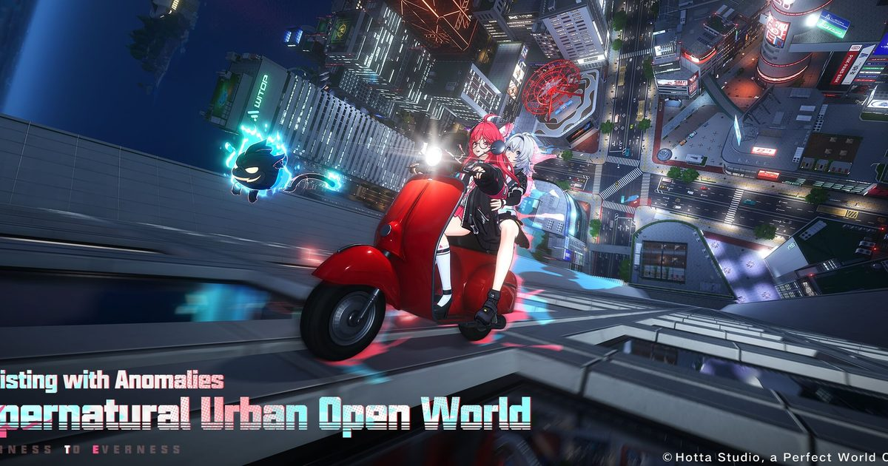

2026-11-11 · 版本深读

11 月 11 日中午，Hotta Studio 把《异环》推到了 1.5「致电，空想迷数（Once Upon a Glitched Call）」： S 级新角色曳尔沐（Elyms）、都市传说「空号」主线、物流公司经营「运通全城」、 四人坦克乱斗、单人桌游，一口气全端上来。媒体报道把这张清单原样抄了一遍就收工， 但真正值得写的两件事没人讲：「信号强度」这个机制到底改变了什么操作习惯， 以及一个开放世界游戏往里塞四种「副业小游戏」，是内容变多了，还是你的下班时间被征用了。
曳尔沐是异象管理局 E.T.D 六队副队长，人设核心是一个词：永远在线—— 闲置时有概率主动递上小礼物（「You There?」，每日限一次），战斗里则举着手机遥控「梦终端」作战。 卡池从 11/11 开到 12/2，是本作第 11 个限定池；队长 Exe，那位能借数字广告牌在摩天楼间穿行的黑客， 要到 12/2 下半才登场。上半同时复刻 Shinku，其「Resolve Perks」装扮进度可结转—— 这是官方在明示：这两个人是绑在一个体系里卖的。
所有媒体都写了「信号强度可切换技能形态」，这句翻译等于什么都没说。拆开看： 曳尔沐的普攻按连接强度分三套——弱连接下「Instant Glitch」是五段连击， 收尾直接解锁「Intermittent Existence」；中/强连接下「Crosstalk」缩成三段， 收尾解锁的是「Goodbye to You」。也就是说，同一个按键，在不同档位下是两个不同的技能组。 而她的大招伤害按施放瞬间的信号档位结算，放完立刻下台，转为后台持续协同攻击， 同时给全队攻击加成。
组合她与 Zero 同款的「Instant Cycle」特性——放转向技即满能量——整个循环变成一道 实时资源题：你不是在「攒能量」，你是在管理「信号档位」什么时候拉满。 强档位下放大招收益最高，但为了拉满档位多打两轮普攻，主 C 就在场上多站一秒。 这就是「何时切人」从手感问题变成数值问题的那一步。配队结论也顺理成章： game8 直接把她标成 Charge 队（Shinku 冲能体系）里 Zero 的上位补位， 她不是新主 C，是一套体系的拼图。专武「Echoes on Hold」进一步锁死了这个定位： 大招后三次协同攻击给全队 12% 防御无视（自身再叠 10%），转向技给全队 8% Cosmos 抗性穿透—— 全是队伍词条，一件都不是给她自己的。
1.5 的另一半是经营：完成三张配送订单即可开设物流分公司，招司机、派单， 还能把队友指派进管理层——公司升级后解锁救护车、运钞车、押运车。 再往外看，这个版本同时塞了神秘盒拿坦克、11/19 开的「Full Tank Ahead」四人载具乱斗、 以及 DSD POP 里的单人桌游（格子上摆建筑、凑商业组合凑分数）。 加上原有的钓鱼、加油站、像素广场，《异环》正在快速堆出一个「都市模拟器」的壳。
我们的观点是谨慎的：这套设计的聪明处在于把体力变成了物流公司的时间资源—— 司机派遣直接消耗 City Stamina，等于给不想手动跑图的玩家一个合法的自动化出口， 溢出仓库和资源总览面板也是冲着「减少登录焦虑」去的。但风险同样具体： 当一个开放世界游戏的版本亮点是五种与战斗无关的小游戏时， 它的核心战斗内容量是否够撑起六周版本周期，答案已经开始摇摆。 对比 1.3「雾中朔望」把功夫下在战斗机制（可叠加的灼烧连锁）上， 1.5 明显把赌注移向了「生活感」——这更像在给 12/2 的 Exe 剧情主场搭舞台， 而不是给战斗玩家上新菜。
我们算了一遍版本内免费骰子的流水：Circle Gifts 七日登录给 10 枚 Solid Dice， Fortune's Bounty 里程碑再给 10 枚 Fabricated Dice 与 5 枚 Solid Dice， 合计约 25 抽的官方直接投放——对第 11 个限定池只是零头，真正的资源还是囤票决策。 更值得注意的是「Dialing Perks」棋盘：掷骰子走格拿装扮奖励， 但同一批装饰性奖励也以低概率直接从棋盘上掉落—— 皮肤被放进了一个带概率的奖池里。这在设计上叫「可白嫖的保底」， 在商业上叫「抽卡里嵌套的第二层抽卡」。目前奖励全部是装扮和配饰，不碰强度， 边界还没被踩破；但这个结构一旦被验证，下一个版本会不会把更强力的东西放进棋盘， 才是真正要盯的信号。
实操结论给三句话：Charge 队玩家，曳尔沐是可以无脑入池的一档—— 她同时是队伍增益、后台输出和下位替代的退休金；不玩冲能体系的玩家， 建议等 12/2 的 Exe 上线后看两人组队测评再定，毕竟 ETD-6 双人组大概率是一套组合拳； 运通全城别急着冲等级，先把三种特种车辆对应的派遣单留到第二周再清， 前期把 City Stamina 留给主线探索更划算。
往回看，这条路线有清晰的先例：《幻塔》后期版本靠家园与载具玩法续命， 《绝区零》把城市店铺做成日常据点，《无限暖暖》干脆把「换装拍照」做成了版本主菜。 《异环》的特殊之处是它起步就把「都市开放世界」写进了标题， 所以生活玩法不是转型，而是把承诺兑现——问题只在于节奏： 1.3 押战斗、1.5 押生活，两条腿交替走的版本策略， 好处是谁都不被落下，代价是每个版本都像「半个版本」。 真正的验收节点在 Exe 上线后的 12 月： 如果 ETD-6 双人组的战斗深度撑得起来，1.5 的「生活感」就是铺垫； 撑不起来，它就会被记住为「开放世界引流成功、战斗留存存疑」的那个版本。
我们的评分理由：信号强度是一个真正有设计密度的机制——它把切人时机从手感变成资源管理， 这在同类游戏里罕见，值 0.5 分的原创分；运通全城与溢出仓库确实在减负；扣分项是战斗内容量 相对 1.3 明显缩水，以及 Dialing Perks 的嵌套概率结构虽然还没越界，但已经把探头伸过了线。 一句话总结：抽不抽看她，玩不玩看你——但这个版本真正的悬念，要到 12 月 2 日 Exe 上场才揭晓。